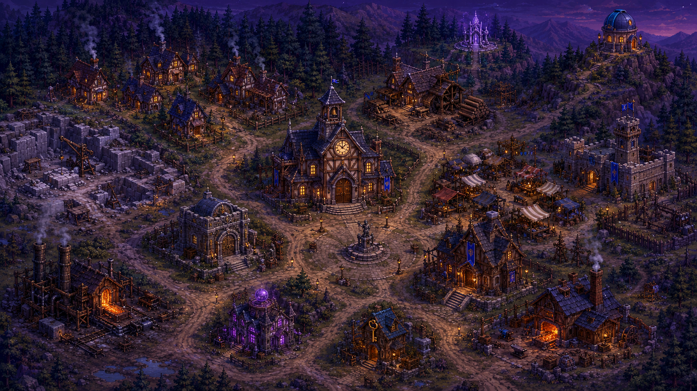

−
Effets du village
Fumées de cheminée
Braises forge + fonderie
Lucioles
Étang qui scintille
Oiseaux
Torches vacillantes
Magie (statue, sanctuaire, orbe)
Feuilles des lisières
Brume rasante
Chauves-souris
Ciel étoilé
Villageois sur les routes
Papillons de nuit (torches)
Halos de fenêtres (CSS)
Densité
×1.0
Vent
×1.0
Heure ☀︎ ↔ ☾
crépuscule
Cycle jour/nuit auto
🕊 Déclencher un vol d'oiseaux
Page de démo : les effets sont forcés même si ton système est en « animations réduites ». Dans le jeu, ils respecteront ce réglage et l'option Particules réduites.